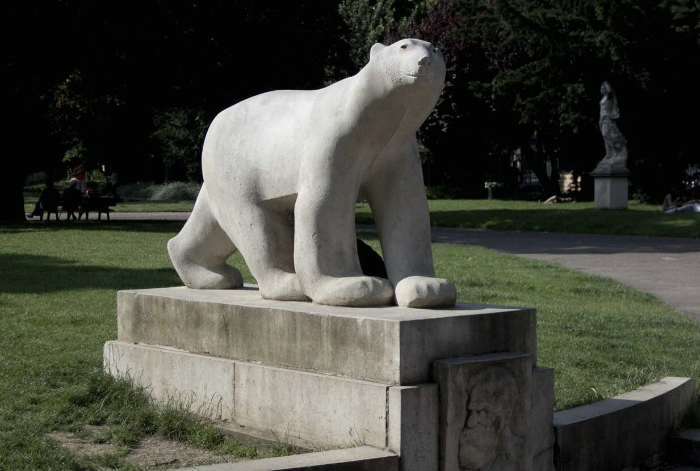

L’Ours blanc est une sculpture célèbre réalisée en 1922 par le sculpteur français François Pompon. Contrairement aux sculptures très détaillées de son époque, Pompon choisit un style simple et épuré, avec des formes douces et lisses. Il cherche à capturer l’essence de l’animal plutôt que tous ses détails. Cette œuvre représente un ours polaire en train de marcher calmement. Sa silhouette sobre et élégante donne une impression de force, de calme et de mouvement. Présentée pour la première fois au Salon d’Automne en 1922, la sculpture connaît immédiatement un grand succès. Aujourd’hui, elle est devenue l’une des œuvres les plus célèbres de la sculpture animalière française.
